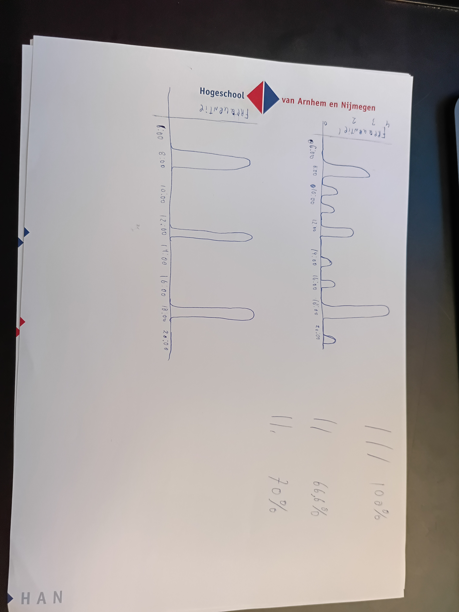

Deze pagina bevat de persoonlijke reflectie/ terugblik op wat ik (Lars) allemaal heb gedaan tijdens het Sensorium project, maar vooral ook wat ik heb geleerd.
Helemaal in het begin begon het al met dat ik moest vertalen waar ik en de opdrachtgever het over hadden. Dit heb ik gedaan door 2 schetsen te maken, namelijk een data flow schets en een implementatie schets. Op deze manier hoopte ik dat mijn groepsgenoten een beter begrip zouden krijgen van hoe het systeem eruit zou zien.


Naar mijn idee hebben deze schetsen wel gewerkt, omdat ik ook a.d.h.v. de afbeeldingen het kon uitleggen. Ik zal dit zeker onthouden voor in de toekomst, omdat ik heb geleerd dat dit een best effectieve manier is van technische dingen uitleggen aan niet technische mensen.
Vervolgens ben ik begonnen met het maken van de opstelling. Dit heb ik gedaan door eerst alle onderdelen te verzamelen.

Helaas had de Raspberry Pi geen zin om mee te werken en kreeg ik hem niet opgestart na 2 dagen proberen. Hierdoor was ik genoodzaakt om nogmaals naar Doetinchem te rijden, waar we erachter kwamen dat hij het ineens wel gewoon deed. Na wat meer testen thuis en op andere locaties bleek het een probleem te zijn met de monitor die ik gebruikte. Deze was een andere variant van micro-HDMI dan de Raspberry Pi, waardoor niks weergeven werd en de Raspberry Pi niet geïnitieerd werd.
Ik heb 1 keer eerder met een Raspberry Pi gewerkt, dus dit was een groot leerpunt voor mij. Verder heb ik ook meer geleerd over hoe Python geschreven moet worden. Hierna heb ik namelijk de drukknop aangesloten en code geschreven die ervoor zorgt dat de knop als sensor uitgelezen wordt, maar ook hoe je via je code een MP3 op het systeem kan afspelen. Dit was allemaal nieuwe voor mij, maar zie de video hieronder voor het resultaat.
Video 04-12-2025 Test mocken koelkastdeur
Om deze database te maken heb ik mijn groepsgenoten het grootste gedeelte laten maken. Hiervoor heb ik wel DB browser geïnstalleerd voor SQLite, zodat ze een visuele weergave hadden. Als ze direct alles in code zouden moeten maken, denk ik dat het niet goed was gekomen.
Video 17-12-2025 database gezamenlijk maken voor leerervaring groepsgenoten.
Hierna heb ik ze hun eigen gang laten gaan en heb ik alleen uitgelegd hoe iets werkt en wat we willen, maar niet wat ze zelf moesten doen. Dit zorgde voor de nodige frustraties, denkprocessen en extra uitleg. Hierna hadden ze wel een redelijk begrip van wat ze nou precies gemaakt hadden. Bijvoorbeeld wat een unique key is, wat een primary key is en zulke basis kennis. Aan het eind begonnen ze het zelfs een beetje leuk te vinden :).
Later zijn we nog een keer bij elkaar gekomen om de AI te programmeren, maar hier is helaas geen video van. Dit heb ik op dezelfde manier aangepakt als hierboven genoemd is. Helaas was dit naar mijn idee toch iets te complex voor ze en heb ik het uiteindelijk moeten integreren, testen en fixen, maar de basis hebben ze wel meegekregen.
Een onderdeel van deze AI was de clustering en filtering en dit heb ik op enkele manieren uit proberen te leggen. Mijn prachtige tekening is hieronder te vinden, maar hierna begreep mijn groep het wel.
Hiervan heb ik geleerd hoe ik op een schematische wijze ideeën en visualisaties in mijn hoofd kan overbrengen op anderen, namelijk door het gewoon over te tekenen. Ik ben hier al vaker tegenenaan gelopen, maar vanaf nu neem ik wel een pen en papier mee om altijd dingen te kunnen schetsen :). Dezelfde methode heb ik gebruikt om clustering en filtering uit te leggen in het portfolio aan de opdrachtgever, maar ook om het uit te leggen in de eindpresentatie.
Uiteindelijk was alles gemaakt en gefixt en toen heb ik video's gemaakt om de functionaliteiten te demonstreren. Deze video ga ik gebruiken voor de eindpresentatie aan de opdrachtgever.
Zie deze link voor de demonstratie video:
Demonstratie Video Sensorium ProjectDe feedback/reactie hierop was TODO, presentatie moet nog gehouden worden.
We hebben enkele documenten, zoals de business case, TOM en het communicatieplan niet gemaakt in dit project. Dit heeft als voornaamste reden dat dit een Proof of Concept is en de constructie van klant en opdrachtgever anders ingedeeld is dan bij normalere projecten. We kunnen wel een business case maken, maar dit heeft niet zo veel nut voor een POC, dit is relevanter bij een prototype. De opdrachtgever heeft er namelijk niks aan als hij weet hoe duur een POC is. Verder is onze klant de demente ouderen/ mantelzorgers, maar zou dit product waarschijnlijk verkocht worden aan een tussenpartij.